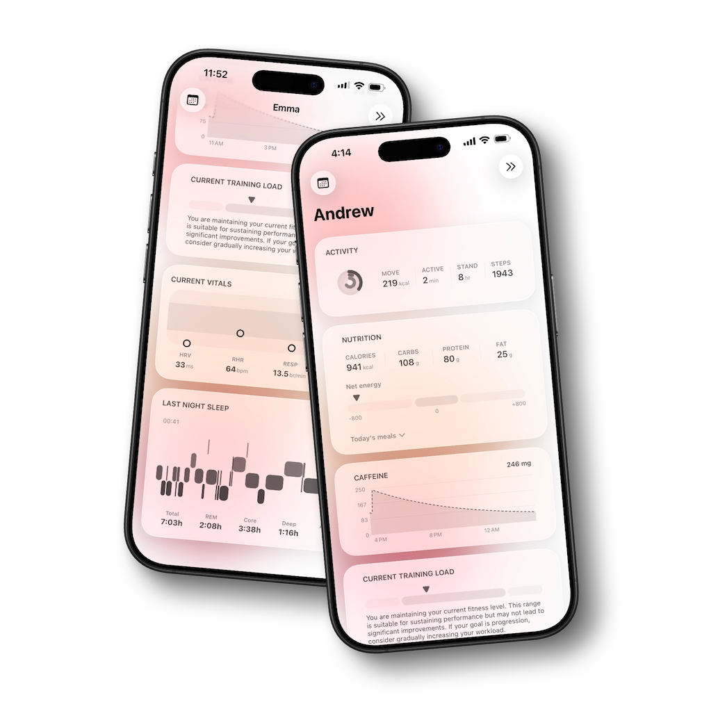
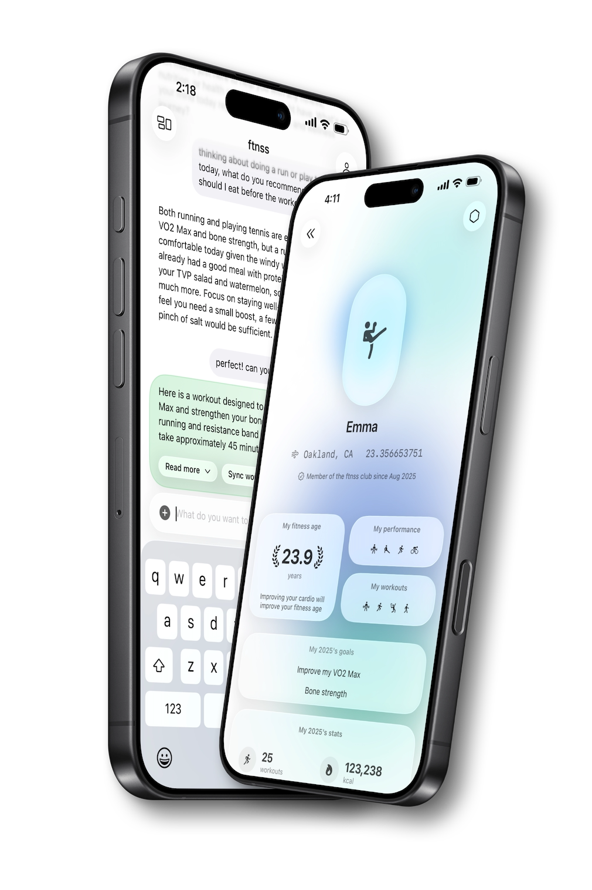
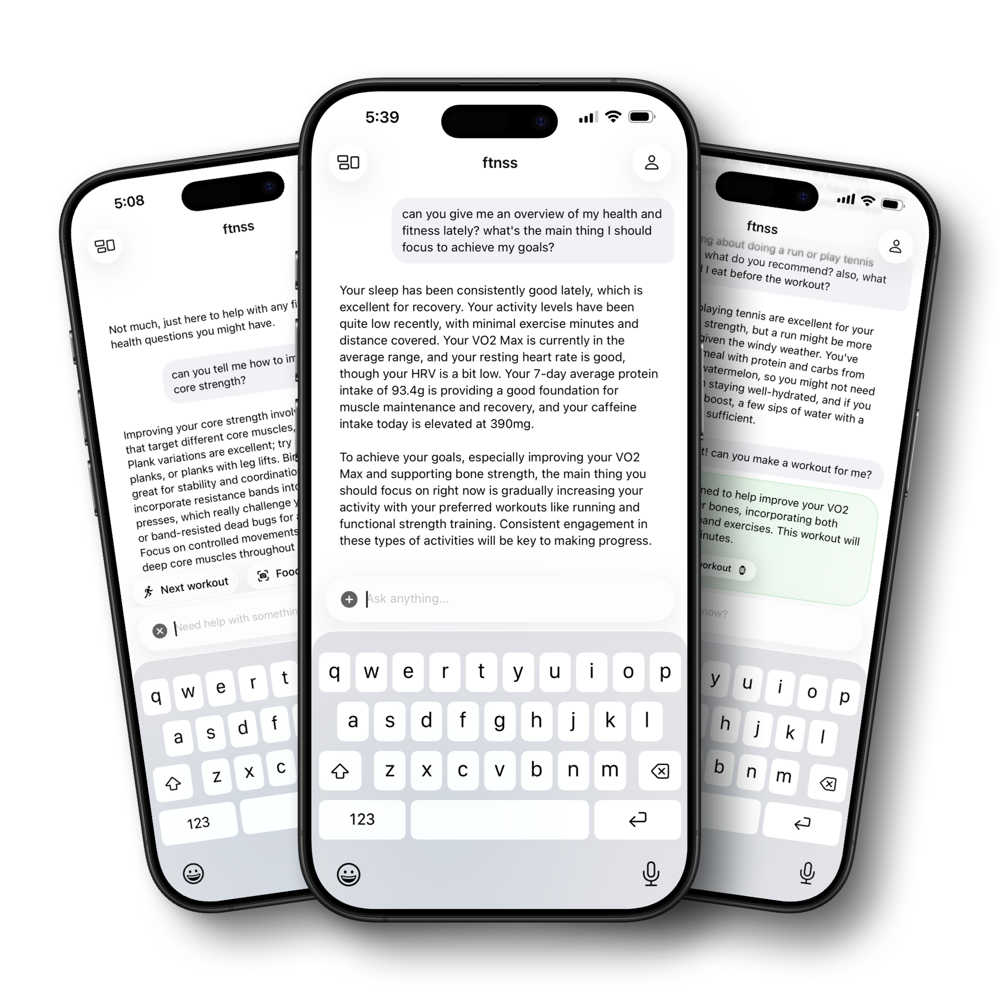
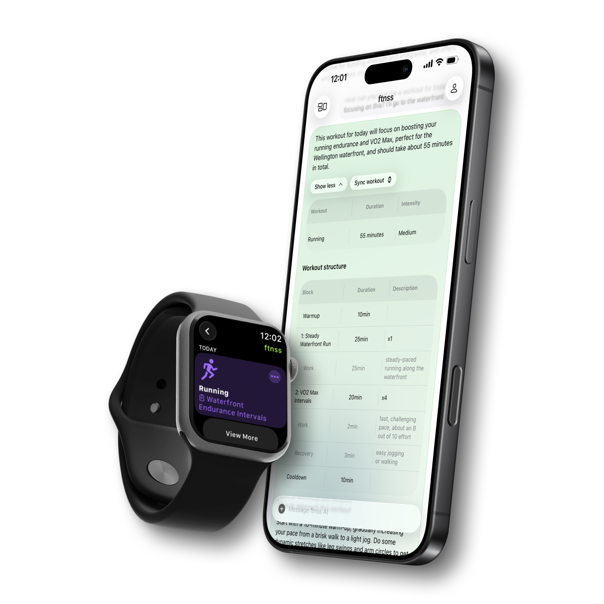
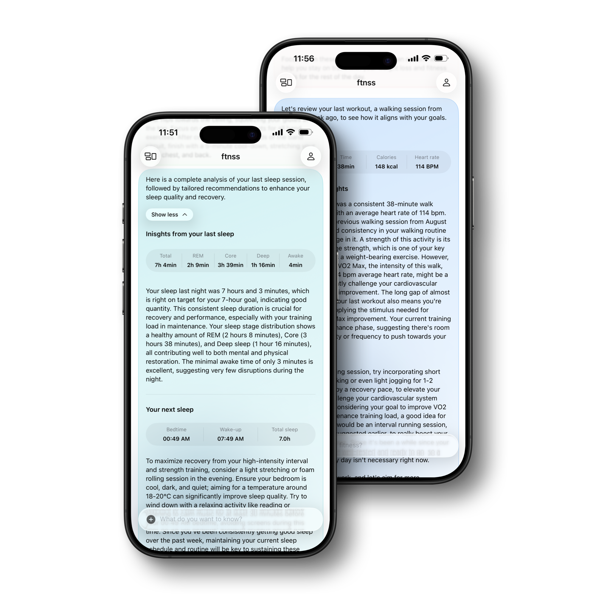
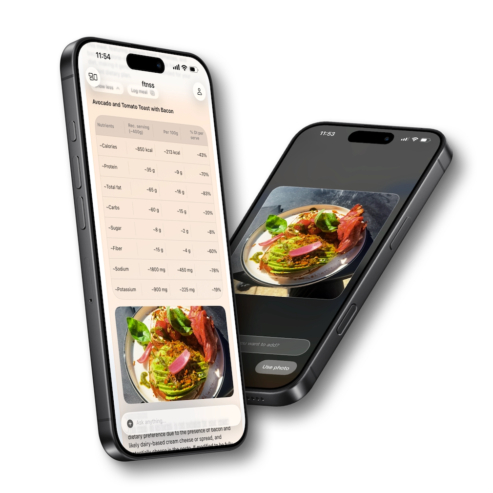
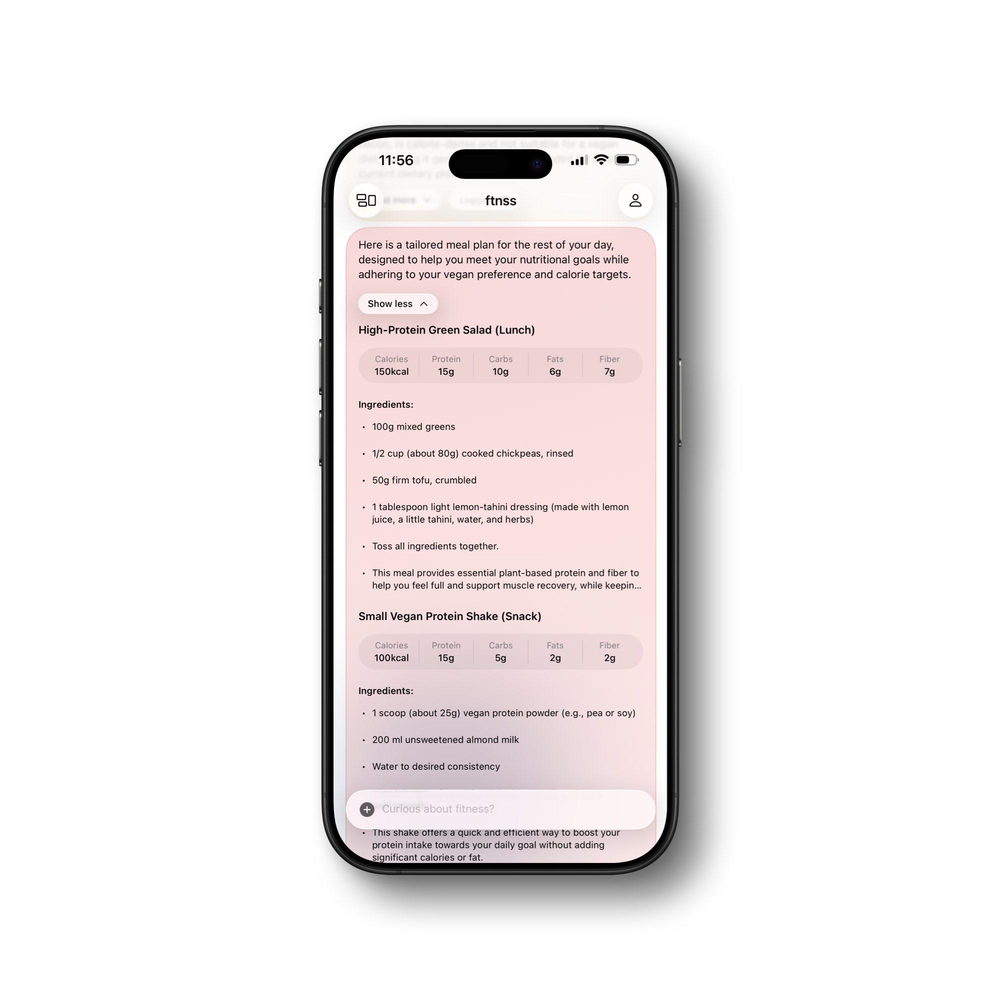

Personalized Coaching
Tailored workout plans that adapt to your fitness level, performance, and recovery with guidance across strength, endurance, mobility, and rest.
AI Insights from Apple Health
Food Tracker, Workouts & Apple Health AI

Personalized training, nutrition, and recovery guidance powered by AI. ftnss connects with Apple Health to analyze your data and adapt to your goals, schedule, and lifestyle.

Tailored workout plans that adapt to your fitness level, performance, and recovery with guidance across strength, endurance, mobility, and rest.

Goal based meal suggestions, automatic macro targets, and fast logging by photo or text to keep your nutrition aligned with your training.

Full sync with Apple Health and Apple Watch with analysis of HRV, VO2 Max, sleep quality, and recovery markers plus clear daily and weekly trends.

Automatic logging of sessions, insights on training load and progression, and adaptive suggestions that help you avoid overtraining.

Visual dashboards for weight, energy, and performance with optional monthly photos and reminders that align with your rhythm.

15+ in-app smart cards show workouts, steps, sleep, calories, and trends in a clean, glanceable view.
ftnss is an AI first coach that adapts daily to your recovery, sleep, and schedule. It combines a minimalist design with evidence based guidance and Apple Health sync to turn your data into useful actions you can follow.
See your stats at a glance inside the app with smart cards that highlight workouts, steps, sleep, calories, and activity trends.
Sync happens through Apple Health on your device. You control permissions and your data stays private while ftnss turns numbers into guidance.
Plan meals and workouts with macro targets and daily energy insights to support sustainable fat loss.
Structured strength blocks with progressive overload and recovery aware adjustments for consistent progress.
Adaptive endurance sessions that integrate with your Strava and Apple Watch data for smarter pacing and recovery.
Trends from HRV, resting heart rate, and sleep quality with practical suggestions to improve rest and readiness.
Log meals by photo or text, get instant calories and macros, and track weekly patterns without manual spreadsheets.
Stay consistent with steps, hydration, and movement targets while keeping an eye on your overall health trends.
ftnss connects workouts, nutrition, and recovery in one AI chat. Ask about calories, macros, training volume, recovery, sleep, or progress and get clear answers using your synced stats.
Use ftnss with Strava, MyFitnessPal, Garmin, Fitbit, Runna, and more through Apple Health. Keep your data private and in sync while ftnss turns numbers into actions.
Fitbod and Strong focus on gym programming, Strava leads in endurance tracking, Whoop and Oura specialize in recovery, and MyFitnessPal or Lifesum cover nutrition. ftnss brings these pillars together through Apple Health with an AI coach that makes your combined data actionable.
Keep using the tools you love while ftnss provides personalized guidance across workouts, nutrition, sleep, and recovery in one place.
The AI coach turns Apple Health stats into simple guidance I can follow. I finally understand what to do next.
Mark S.
Plans adapt to my recovery and schedule, and the smart cards keep me focused without adding noise.
Anna C.
Clear daily targets for calories, protein, and training volume. I spend less time guessing and more time doing.
Joe K.
Typing a meal or snapping a photo gives me instant macros. Way quicker than manual entries.
Avery M.
Minimal look, no clutter, and the right amount of detail when I need it.
Timothy F.
In-app cards summarize steps, calories, and recovery trends so I stay consistent.
Bogdan P.
Sleep and HRV trends translate into training suggestions I actually follow. It feels like a coach in my pocket.
Justine C.
Enough detail to be useful without being overwhelming. The AI answers make decisions easier.
Ava R.
Quick glance cards and a short chat keep me on track every day.
Ollie B.
When sleep dips, sessions adjust. When recovery is high, I get green light workouts. Simple and smart.
Edgar K.
Workouts, food logging, and sleep insights in one place with Apple Health sync.
Swadea D.
Photo logging is fast and the macro targets are clear enough to follow every day.
Nora R.
Clean interface with just the right options. It stays out of the way while helping me improve.
Aella F.
From the chat to the smart cards, everything feels consistent and dependable day to day.
Darren J.
Clear answers about training, nutrition, and recovery without the usual guesswork.
Lisa S.
ftnss includes free features for core coaching, logging, and insights. Advanced coaching and deeper analytics are available via a premium plan.
Grant ftnss read access in Apple Health to steps, workouts, heart data, HRV, VO2 Max, sleep, and other metrics you want to use. You can change permissions any time.
Data from Strava, Garmin, Fitbit, Runna, MyFitnessPal, and other apps can sync to Apple Health. ftnss uses that combined data to answer questions and tailor plans.
Yes. Snap a photo or type a meal and ftnss estimates calories and macros. Your history updates instantly with daily targets.
ftnss considers your recent training load, sleep, recovery, and schedule to adjust intensity and volume. You will see suggested sessions and rest when needed.
Yes. ftnss includes in-app smart cards that summarize workouts, steps, calories, sleep, and trends for quick daily reviews.
Sync happens through Apple Health on your device. You control what ftnss can read and can change permissions any time in Apple Health settings.
iPhone with iOS and Apple Health.
Over 15 smart cards that focus on workouts, activity, sleep, calories, and progress.
An estimate built from HRV, VO2 Max, resting heart rate, sleep, and activity trends that compares how your body performs relative to typical ranges.
Yes. The app works offline and data stays on your device. See our Privacy page for details.
Smart cards show workouts, steps, calories, sleep, and activity trends inside the app for quick daily check ins.
Ask about calories, macros, training volume, recovery, sleep trends, or progress. The coach uses your synced stats to give clear suggestions.
ftnss provides AI guidance based on your data and goals. It complements the work you do on your own or with a coach and does not provide medical advice.
No. ftnss provides educational information and fitness guidance based on your data. It is not a substitute for professional medical advice.